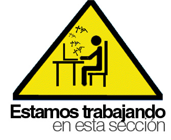

La temporada 2025 del Campeonato del Mundo de MotoGP ha concluido, coronando a tres campeones que han dejado huella de formas muy distintas. Desde un regreso triunfal en la categoría reina hasta un hito histórico para un país entero en Moto2, y un dominio arrollador en Moto3.
La temporada 2025 será recordada como la del regreso definitivo de Marc Márquez. Pilotando la Ducati oficial, el de Cervera silenció todas las dudas y se alzó con su noveno título mundial (séptimo en la categoría reina, que debido al cambio de Dorna a Liberty Media, son contados como mundialistas en este momento).
Márquez selló el campeonato de forma matemática con un fin de semana perfecto para él, en el Gran Premio de Japon, en Motegi. Momento muy especial para el de cervera al encontrase con el equipo de Honda al llegar parque cerrado al final la carrera, gracias al tercer puesto de Joan Mir.
Un final de temporada accidentado: La celebración del título se vio empañada poco después. Tras asegurar la corona, una fuerte caída en ese mismo GP de Indonesia le provocó una lesión que requirió cirugía, obligándole a perderse las últimas citas del calendario, incluyendo Portugal y la final de Valencia.

La categoría de Moto2 nos brindó el momento más emocionante y dramático de la jornada final en Valencia. Diogo Moreira se ha convertido en el primer campeón del mundo brasileño en la historia del motociclismo, en un final de infarto.
El Drama de Valencia: Moreira llegó a la última carrera como líder, pero con el español Manuel "ManuGasss" González pisándole los talones. La tensión era máxima.
González necesitaba ganar y que Moreira terminara 15º o peor. Sin embargo, la suerte abandonó al español. Manu González sufrió problemas de agarre en su neumático trasero, se vio forzado a entrar en boxes y terminó la carrera en una desoladora 22ª posición. A Diogo Moreira le bastó con gestionar la presión y cruzar la meta en 11ª posición para asegurar el título y desatar la euforia en Brasil.
Fue una remontada espectacular durante todo el año para Moreira, que llegó a estar a 61 puntos de González tras el GP de Francia y que, con una segunda mitad de temporada brillante, logró el título que le dará el ascenso a MotoGP en 2026. La victoria en la carrera de Valencia fue para Izan Guevara, que consigue su primer triunfo en Moto2, liderando un podio totalmente español junto a Daniel Holgado e Iván Ortolá.
Si Moto2 fue pura tensión, Moto3 fue una demostración de autoridad incontestable. El piloto sevillano José Antonio Rueda dominó la temporada 2025 de principio a fin, convirtiéndose en el primer campeón del mundo andaluz de la historia.
Un título sentenciado con antelación: Rueda no dio opción a sus rivales. Ganó la corona con una superioridad aplastante, proclamándose campeón matemáticamente en el Gran Premio de Indonesia el pasado 5 de octubre, con cuatro carreras aún por disputarse. Selló el título de la mejor forma posible: ganando la carrera, lo que supuso su novena victoria de una temporada casi perfecta.
GP de Valencia: Con el título decidido, la lucha en Cheste se centró en el subcampeonato. La victoria en la última carrera fue para Adrián Fernández. Ángel Piqueras logró asegurar el subcampeonato mundial tras finalizar la carrera en sexta posición.